Docs › Worked physics and service recipes › Systems and networks recipes
6.19 Systems and networks recipes
This section includes the field-based declarations and the independently callable systems and networks service configurations. The configuration keys in the service recipes belong to the indicated provider.
6.19.1 Pressure relaxation of an accumulator
A resistance connects a hydraulic compliance to a prescribed reference pressure. The pressure time constant is resistance times compliance.
from onesim.physics.systems import HydraulicAccumulator
domain = LumpedDomain()
model = HydraulicAccumulator(
domain=domain.system,
compliance=2,
resistance=1,
reference_pressure=1,
)
t, data = history_case(
domain,
model,
dict(pressure=3.0),
("pressure",),
end=2,
dt=0.01,
)
np.testing.assert_allclose(data["pressure"], 1 + 2 * np.exp(-t / 2), atol=1e-9)
fig = history_plot("Pressure relaxation of an accumulator", model, t, data)
plt.show()
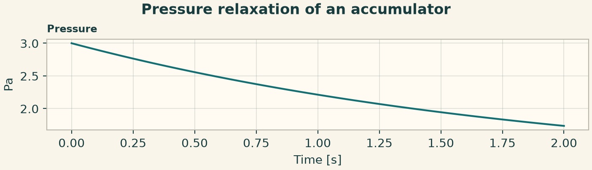
6.19.2 Cooling of one thermal node
Supply an ambient temperature and a linear conductance. The node temperature decays exponentially with capacity divided by conductance.
from onesim.physics.systems import ThermalCapacitance
domain = LumpedDomain()
model = ThermalCapacitance(
domain=domain.system,
heat_capacity=2,
conductance=1,
ambient_temperature=300,
)
t, data = history_case(
domain,
model,
dict(temperature=320.0),
("temperature",),
end=2,
dt=0.01,
)
np.testing.assert_allclose(data["temperature"], 300 + 20 * np.exp(-t / 2), atol=1e-8)
fig = history_plot("Cooling of one thermal node", model, t, data)
plt.show()
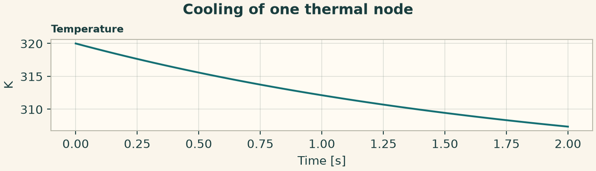
6.19.3 RC voltage and current
Supply a fixed voltage across a series resistor and capacitor. The initial charging current falls as the capacitor voltage approaches the supply.
from onesim.physics.systems import ResistorCapacitor
domain = LumpedDomain()
model = ResistorCapacitor(
domain=domain.system,
resistance=2,
capacitance=0.5,
supply_voltage=3,
)
t, data = history_case(
domain,
model,
dict(voltage=0.0),
("voltage", "current"),
end=2,
dt=0.01,
)
np.testing.assert_allclose(data["voltage"], 3 * (1 - np.exp(-t)), atol=1e-8)
fig = history_plot("RC voltage and current", model, t, data)
plt.show()
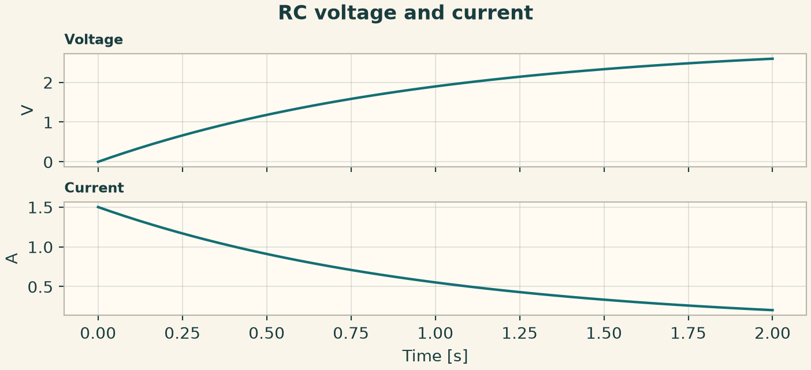
6.19.4 Step response of a first-order controller
Set the signal and output units when using this block with physical inputs. For a unit step the response approaches the configured gain.
from onesim.physics.systems import FirstOrderControl
domain = LumpedDomain()
model = FirstOrderControl(
domain=domain.system,
time_constant=0.5,
gain=2,
input_signal=1,
)
t, data = history_case(
domain,
model,
dict(response=0.0),
("response",),
end=2,
dt=0.01,
)
np.testing.assert_allclose(data["response"], 2 * (1 - np.exp(-2 * t)), atol=1e-7)
fig = history_plot("Step response of a first-order controller", model, t, data)
plt.show()
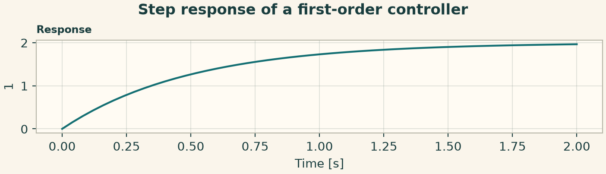
6.19.5 Wash-in to a well-mixed process tank
The volume-to-flow ratio determines the concentration and temperature relaxation time. The feed values and the tank initial state are separate inputs.
from onesim.physics.systems import WellMixedTank
domain = LumpedDomain()
model = WellMixedTank(
domain=domain.system,
volume=2,
flow_rate=1,
feed_concentration=3,
feed_temperature=320,
)
t, data = history_case(
domain,
model,
dict(concentration=1.0, temperature=300.0),
("concentration", "temperature"),
end=2,
dt=0.01,
)
np.testing.assert_allclose(data["concentration"], 3 - 2 * np.exp(-t / 2), atol=1e-8)
fig = history_plot("Wash-in to a well-mixed process tank", model, t, data)
plt.show()
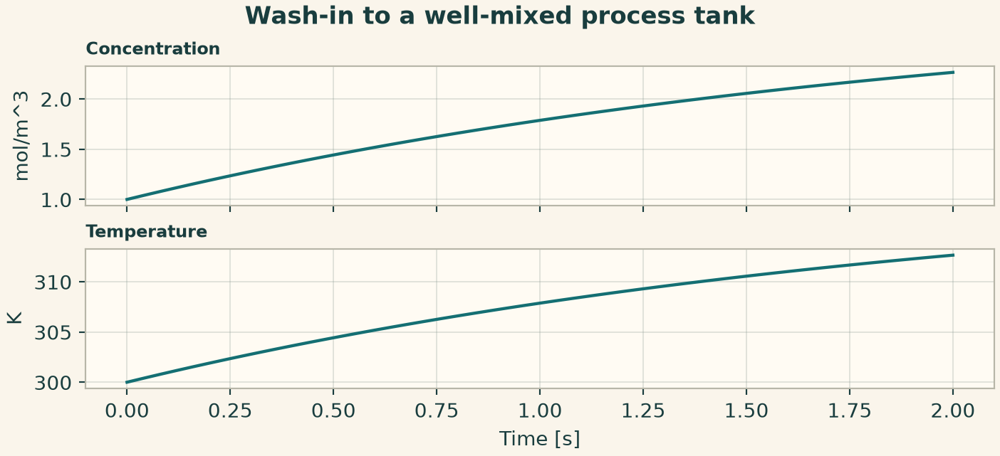
6.19.6 Cooling of a sealed ideal-gas volume
No mass leaves the chamber. The thermal state relaxes toward ambient, with pressure changing through the ideal-gas closure.
from onesim.physics.systems import SealedGasChamber
domain = LumpedDomain()
model = SealedGasChamber(
domain=domain.system,
volume=1,
gas_constant=287,
heat_capacity_cv=718,
thermal_conductance=400,
ambient_temperature=300,
)
t, data = history_case(
domain,
model,
dict(mass=1.0, temperature=340.0),
("temperature", "pressure", "mass"),
end=2,
dt=0.01,
)
np.testing.assert_allclose(data["pressure"], 287 * data["temperature"], atol=1e-7)
fig = history_plot("Cooling of a sealed ideal-gas volume", model, t, data)
plt.show()
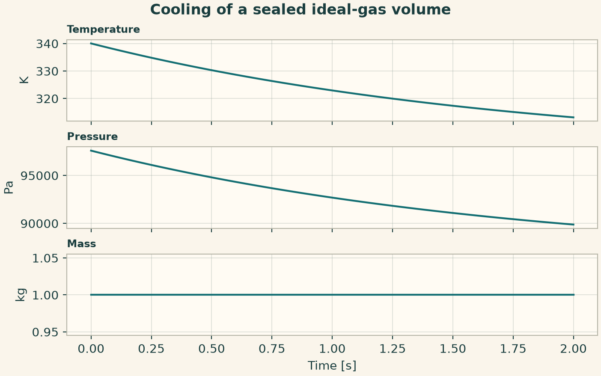
6.19.7 Signal graph with a first-order block
Wire a constant source into a first-order dynamic block. Named signals in the returned history follow the declared graph order.
from onesim.physics.systems import (
ControlSignalFlowConfiguration,
ControlSignalFlowPublicApi,
SignalBlock,
)
settings = dict(
blocks=(
SignalBlock("drive", "constant", parameters={"value": 1.0}),
SignalBlock(
"filter",
"first_order",
inputs=("drive",),
parameters={"time_constant": 0.3, "gain": 0.8},
),
),
final_time=1.0,
time_step=0.01,
)
result = run_service(
ControlSignalFlowPublicApi(), ControlSignalFlowConfiguration(parameters=settings)
)
fig = service_figure(
"Signal graph with a first-order block",
result.times,
"Time [s]",
("Drive [1]", result.signals["drive"]),
("Filtered response [1]", result.signals["filter"]),
)
plt.show()
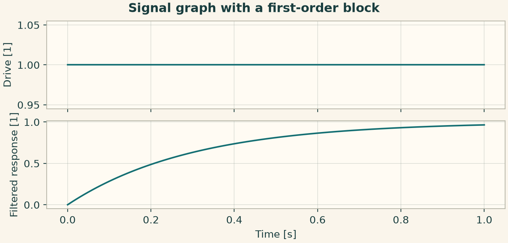
6.19.8 Hydraulic network with a pressure source
Connect an imposed-pressure node to a stored pressure through a resistance. Branch flow is oriented from the first node to the second.
from onesim.physics.systems import (
HydraulicSystemsConfiguration,
HydraulicSystemsPublicApi,
HydraulicNode,
HydraulicBranch,
)
settings = dict(
nodes=(
HydraulicNode("supply", imposed_pressure=2),
HydraulicNode("tank", compliance=2),
),
branches=(HydraulicBranch("pipe", "supply", "tank", resistance=0.5),),
final_time=1.0,
time_step=0.01,
)
result = run_service(
HydraulicSystemsPublicApi(), HydraulicSystemsConfiguration(parameters=settings)
)
fig = service_figure(
"Hydraulic network with a pressure source",
result.times,
"Time [s]",
("Tank pressure [Pa]", result.pressures["tank"]),
("Pipe flow [m3/s]", result.flows["pipe"]),
)
plt.show()
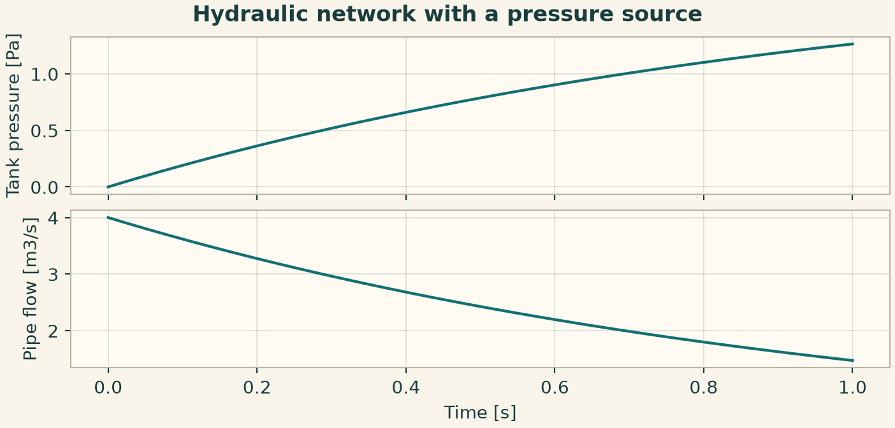
6.19.9 Pressure equalization between gas chambers
Use two gas volumes with distinct initial pressures and connect them with a pressure-driven mass-flow law. The result keeps each chamber and branch separately.
from onesim.physics.systems import (
PneumaticSystemsConfiguration,
PneumaticSystemsPublicApi,
PneumaticChamber,
PneumaticBranch,
)
settings = dict(
chambers=(
PneumaticChamber("up", initial_mass=1.02),
PneumaticChamber("down", initial_mass=0.98),
),
branches=(PneumaticBranch("valve", "up", "down", conductance=1e-5),),
final_time=1.0,
time_step=0.01,
)
result = run_service(
PneumaticSystemsPublicApi(), PneumaticSystemsConfiguration(parameters=settings)
)
fig = service_figure(
"Pressure equalization between gas chambers",
result.times,
"Time [s]",
("Upstream pressure [Pa]", result.pressures["up"]),
("Downstream pressure [Pa]", result.pressures["down"]),
("Valve flow [kg/s]", result.mass_flows["valve"]),
)
plt.show()
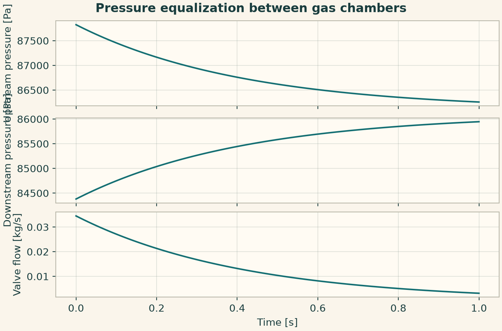
6.19.10 Open CSTR feed and product streams
Identify external feed with a missing source unit and external outlet with a missing target. Keep the two volumetric flows equal for this constant-volume tank.
from onesim.physics.systems import (
ProcessModelsConfiguration,
ProcessModelsPublicApi,
ProcessUnit,
ProcessStream,
)
settings = dict(
component_ids=("A",),
units=(ProcessUnit("tank", volume=2.0, initial_concentrations={"A": 0.5}),),
streams=(
ProcessStream("feed", None, "tank", 0.6, {"A": 2.0}, 320.0),
ProcessStream("product", "tank", None, 0.6),
),
final_time=1.0,
time_step=0.01,
)
result = run_service(
ProcessModelsPublicApi(), ProcessModelsConfiguration(parameters=settings)
)
fig = service_figure(
"Open CSTR feed and product streams",
result.times,
"Time [s]",
("Tank concentration [mol/m3]", result.concentrations["tank"]["A"]),
("Tank temperature [K]", result.temperatures["tank"]),
)
plt.show()
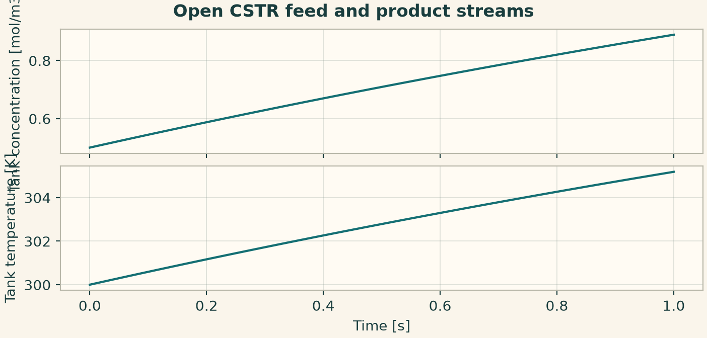
6.19.11 Conductance between thermal storage nodes
Connect two finite capacities. Node temperatures and link heat flow describe the closed redistribution of thermal energy.
from onesim.physics.systems import (
ThermalNetworksConfiguration,
ThermalNetworksPublicApi,
ThermalNode,
ThermalLink,
)
settings = dict(
nodes=(
ThermalNode("hot", thermal_capacity=2, initial_temperature=320),
ThermalNode("cold", thermal_capacity=3, initial_temperature=300),
),
links=(ThermalLink("bridge", "hot", "cold", conductance=1),),
final_time=1.0,
time_step=0.01,
)
result = run_service(
ThermalNetworksPublicApi(), ThermalNetworksConfiguration(parameters=settings)
)
fig = service_figure(
"Conductance between thermal storage nodes",
result.times,
"Time [s]",
("Hot node [K]", result.temperatures["hot"]),
("Cold node [K]", result.temperatures["cold"]),
("Heat flow [W]", result.heat_flows["bridge"]),
)
plt.show()
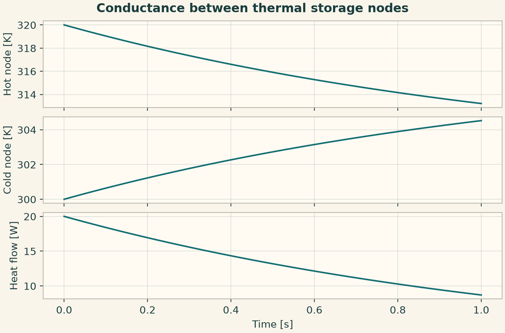
6.19.12 RC network with a fixed voltage node
A resistor links the supply node to a capacitive node. The branch orientation gives a positive charging current.
from onesim.physics.systems import (
ElectricalNetworksConfiguration,
ElectricalNetworksPublicApi,
ElectricalNode,
ElectricalBranch,
)
settings = dict(
nodes=(
ElectricalNode("supply", imposed_voltage=3),
ElectricalNode("load", capacitance=0.5),
),
branches=(ElectricalBranch("resistor", "supply", "load", resistance=2),),
final_time=1.0,
time_step=0.01,
)
result = run_service(
ElectricalNetworksPublicApi(),
ElectricalNetworksConfiguration(parameters=settings),
)
fig = service_figure(
"RC network with a fixed voltage node",
result.times,
"Time [s]",
("Load voltage [V]", result.voltages["load"]),
("Charging current [A]", result.currents["resistor"]),
)
plt.show()
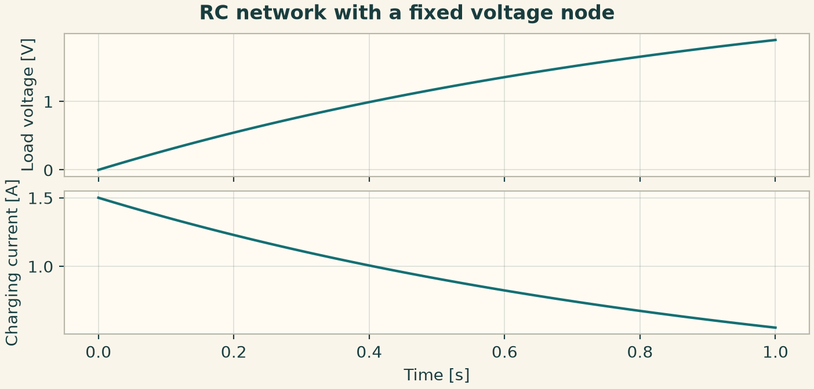
6.19.13 A reduced scalar state with a custom rate
Select a global state and provide its physical rate callback. The service returns the time grid and native state history.
from onesim.physics.systems import (
ZeroDOneDModelsConfiguration,
ZeroDOneDModelsPublicApi,
)
settings = dict(
dimension=0,
initial_state=1.0,
rhs=lambda state, coordinates, time: -0.5 * state,
final_time=1.0,
time_step=0.01,
)
result = run_service(
ZeroDOneDModelsPublicApi(), ZeroDOneDModelsConfiguration(parameters=settings)
)
fig = service_figure(
"A reduced scalar state with a custom rate",
result.times,
"Time [s]",
("Scalar state", np.asarray(result.history).reshape(-1)),
)
plt.show()
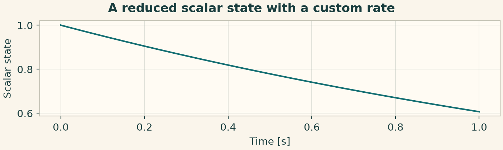
6.19.14 Power-consistent conversion between field effort and system flow
The effort ratio scales the field-to-system effort and the reverse reaction flow. Check the product of effort and flow on both sides. The plot sweeps a family of explicit adapter calls.
from onesim.physics.systems import FieldSystemCouplingProvider
provider = FieldSystemCouplingProvider(effort_ratio=2.0)
effort = np.linspace(0, 3, 41)
results = [
provider.execute(field_effort=float(x), system_flow=0.4).to_mapping()
for x in effort
]
print(results[-1])
keys = list(results[-1])
fig = service_figure(
"Field-to-system conversion",
effort,
"Field effort",
*(
(key.replace("_", " ").capitalize(), [result[key] for result in results])
for key in keys
if key != "field_effort"
)
)
plt.show()
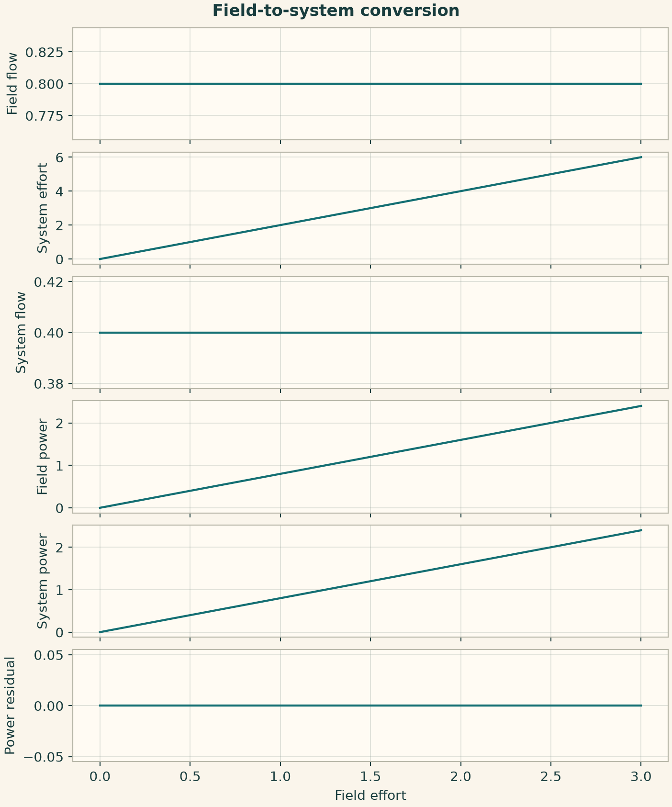